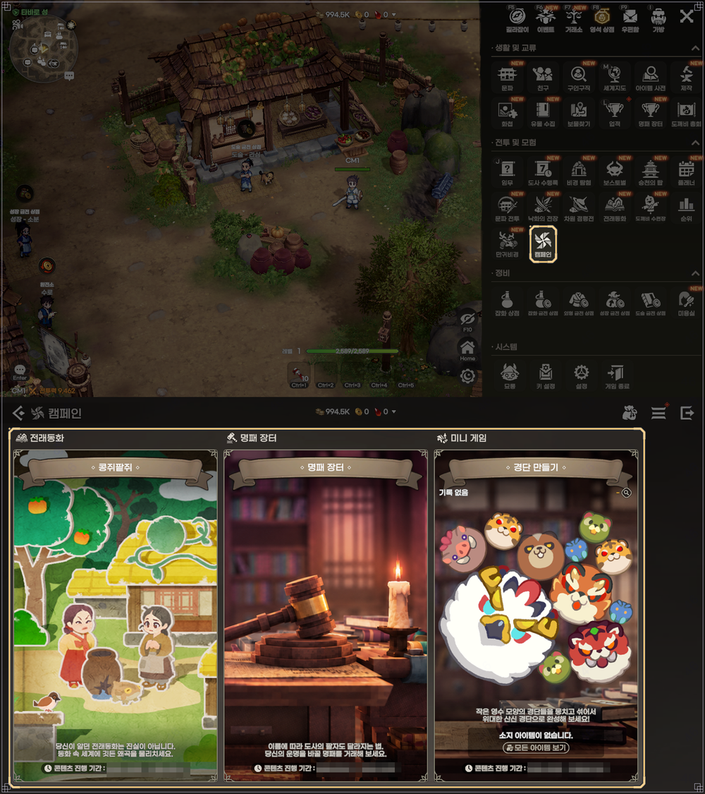
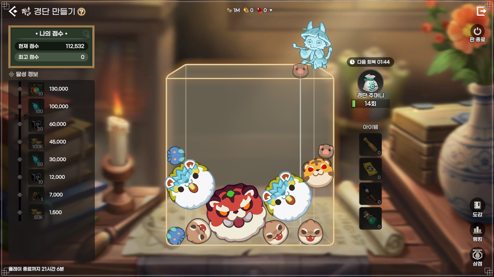
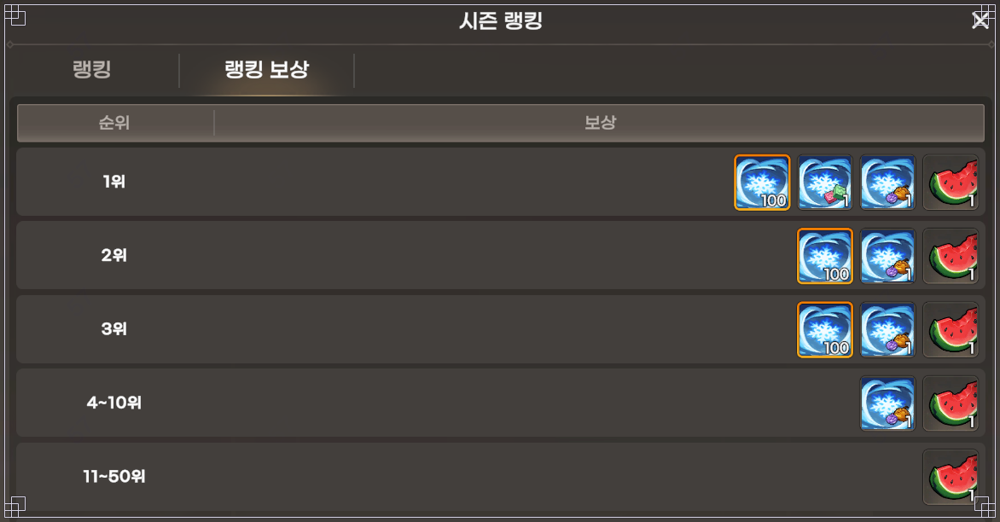

도깨비의세계 경단 만들기 보상, 목표 보상과 랭킹 보상 차이 정리
도깨비의세계 경단 만들기 보상은 두 갈래예요. 목표 보상은 점수를 채우면 직접 받고, 랭킹 보상은 시즌이 끝난 뒤 서버 순위에 따라 우편으로 들어와요. 경단 주머니는 처음 100개를 주고 10분마다 1개씩 차오르는데, 100개를 넘겨서는 쌓이지 않는다고 하네요. 11월 4일 업데이트가 들어오고 나흘이 지난 11월 8일 기준이고, 경단 만들기를 막 시작하는 분이 보상 구조부터 잡을 수 있게 정리했어요.
기준은 카카오게임즈 11월 4일 업데이트 안내예요. 수박 탈것이나 특별 도술 스킨은 루리웹·인벤 같은 언론이 전한 내용이고, 공지 본문에는 아직 안 나와 있어서 확실하진 않아요. 점수 구간과 순위 구간은 공식 공지 스크린샷 기준이라 테스트 수치일 수 있어요.
경단 만들기는 어디서 하고, 화면은 어떻게 보나요
경단 만들기는 메뉴의 캠페인 안에 있는 미니 게임이에요. 11월 4일 업데이트로 메뉴 '전투 및 모험' 안에 캠페인이 생겼고, 전래동화와 명패 장터도 같이 그리로 모였거든요.

메뉴 ▶ 캠페인 ▶ 미니 게임 ▶ 경단 만들기 순서로 들어가요
출처: 카카오게임즈 공식 공지 스크린샷
방식은 영수 모습을 한 경단을 상자에 쌓고 합성해서 산신까지 키우는 거예요. 언론은 같은 종류의 경단 두 개를 합쳐 더 큰 경단으로 만들어 나가는 방식이라고 소개했는데, 제 눈에는 수박게임이랑 닮아 보여요. 화면은 이렇게 읽으면 돼요.
- 왼쪽 위 '나의 점수'에 현재 점수와 최고 점수가 떠요.
- 왼쪽 '달성 정보'가 목표 보상 점수 사다리예요.
- 가운데 상자에 경단을 쌓고, 오른쪽에 경단 주머니와 아이템 4칸이 있어요.
- 오른쪽 아래에 도감·랭킹·상점 버튼, 맨 아래에 '플레이 종료까지' 남은 시간이 보여요.

화면 속 수치는 예시예요
출처: 카카오게임즈 공식 공지 스크린샷
화면 오른쪽 위에는 직접 누르는 '판 종료' 버튼이 보여요. 다만 경단 단계 이름, 합성 점수 환산, 자동으로 판이 끝나는 조건은 공지에 안 나와 있어요.
공지 본문·스크린샷에 없는 값이에요. 확인 위치: 인게임 도감 화면과 [미니 게임] 공식 가이드
경단 주머니로 하루에 몇 판 할 수 있나요
경단 주머니는 처음 100개가 있고 10분마다 1개씩 자동으로 차오르니, 충전만 보면 하루 144개예요. 화면에 '경단 주머니 N회'와 '다음 회복' 시간이 같이 떠서 이 숫자가 곧 남은 횟수로 보여요. 공식 스크린샷에는 '경단 주머니 14회'로 떠 있는데 테스트 화면의 예시 수치이고, 다음 회복 시간이 같이 보이니 접속 전에 몇 개가 찼을지 어림하기 편해요.
| 구분 | 수치 | 계산 |
|---|---|---|
| 처음 지급 | 100개 | - |
| 자동 충전 | 10분에 1개 | 1시간 6개 · 하루 144개 |
| 0개에서 가득 찰 때까지 | 16시간 40분 | 100개 × 10분 = 1,000분 |
| 보유 상한 | 100개 | 넘으면 더 쌓이지 않음 |
산수대로면 주머니를 비운 채 자러 가도 8시간 뒤에는 48개가 차 있어요. 반대로 100개가 꽉 찬 채로 오래 두면 그동안 차오를 몫이 사라지니, 제가 보기엔 100개 근처에서 한 번씩 비워 주는 쪽이 이득이죠. 곧 다시 접속할 거라면 그대로 둬도 되고, 한참 못 들어올 것 같으면 나가기 전에 주머니부터 비워 두는 식이에요. 영약을 빼고 자연 충전만 따지면 첫날은 시작분 100개에 충전분 144개를 더해 최대 244개, 그다음부터는 매일 비운다고 치면 하루 144개 안팎이에요.
상점 도구 4종은 얼마고, 어디에 쓰나요
경단 만들기 상점에는 도구가 4종 있고, 값은 전부 금전이에요. 전부 귀속이라 거래소에는 못 내놓고, 구매 횟수 제한은 없어요.
| 도구 | 가격(금전) | 효과 |
|---|---|---|
| 절구공이 | 5,000 | 선택한 경단 하나를 제거 |
| 교환부 | 3,000 | 서로 다른 두 경단의 위치를 교환 |
| 승급붓 | 3,000 | 선택한 경단을 한 단계 승급 |
| 영약 | 1,000 | 경단 주머니 15개 회복(상한 100 초과 가능) |
영약은 15개에 1,000금전이라 주머니 1개를 한 판으로 치면 약 67금전이고, 100개를 넘겨서 채울 수 있다고 공지에 적힌 도구예요. 네 가지를 하나씩만 사도 12,000금전이라 금전이 넉넉하지 않은 초반에는 부담이죠. 상자에서 경단 하나를 빼고 싶으면 절구공이, 두 경단의 자리를 바꾸고 싶으면 교환부, 한 단계 올리고 싶으면 승급붓, 주머니가 바닥났으면 영약을 고르는 식으로 설명에 적힌 효과에 맞춰 쓰면 돼요.
목표 보상과 랭킹 보상은 뭐가 다른가요
목표 보상은 시즌 최고 점수가 조건을 넘으면 직접 받고, 랭킹 보상은 시즌이 끝난 뒤 서버 안 순위대로 우편으로 받는 게 가장 큰 차이예요. 점수를 채우는 즉시 직접 받고 싶으면 목표 보상을, 시즌이 끝난 뒤 우편으로 한꺼번에 받아도 괜찮고 서버 순위에 도전해 보고 싶으면 랭킹 보상까지 노리는 쪽이에요.
| 구분 | 기준 | 받는 방법 |
|---|---|---|
| 목표 보상 | 시즌 최고 점수 | 조건 달성 후 직접 수령 |
| 랭킹 보상 | 서버 내 순위 | 시즌 종료 후 정산, 우편 지급 |
목표 보상은 공식 공지 스크린샷의 '달성 정보'에 8구간으로 나와 있고, 아이콘에는 이름 없이 수량만 적혀 있어요. 가장 낮은 1,500점과 가장 높은 130,000점은 크게 벌어져 있고, 예시 화면은 112,532점으로 100,000 구간을 지난 상태예요.
| 점수 | 보상 아이콘 수량 |
|---|---|
| 130,000 | ×10 |
| 100,000 | ×100 |
| 60,000 | ×20 |
| 45,000 | 금전 100K |
| 30,000 | ×50 |
| 12,000 | ×10 |
| 7,000 | ×1 |
| 1,500 | 금전 50K |
랭킹 보상 창은 1위 아이콘 4종, 2·3위 3종, 4~10위 2종, 11~50위 1종으로 줄어드는 구성이에요. 수량으로 보면 1~3위에는 ×100 아이콘이 들어 있고, 4~10위는 ×1과 수박 ×1, 11~50위는 수박 ×1 하나뿐이에요. 수박 모양 아이콘이 1위부터 50위까지 하나씩 들어 있긴 한데, 이름표가 없어서 탈것인지는 알 수 없어요.

화면 속 수치는 예시예요
출처: 카카오게임즈 공식 공지 스크린샷
언론은 수박 탈것과 특별 도술 스킨을 특정 점수 이상이거나 시즌 종료 랭킹에 따라 받는 보상으로 전했어요. 어느 아이콘이 스킨인지, 탈것이 목표 보상 쪽인지 랭킹 쪽인지는 공지만 봐서는 가를 수 없어요.
인게임 하단 '플레이 종료까지' 표시와 시즌 종료 후 우편함에서 볼 수 있어요.
자주 묻는 질문
Q. 경단 만들기는 누구나 할 수 있나요?
공지에 모든 도사님이 이용할 수 있다고 적혀 있어요. 메뉴의 캠페인에서 미니 게임을 고르면 돼요.
Q. 랭킹은 어느 범위의 순위인가요?
공지 표현은 '서버 내 순위'예요. 서버가 캐릭터가 속한 서버를 뜻하는지는 공지만으로는 알 수 없어요.
Q. 차원 점령전의 프리시즌과 같은 건가요?
아니에요. 차원 점령전은 같은 날 들어온 다른 콘텐츠이고, 공식 공지 기준으로 첫 회차 베타가 11월 8일(일)까지예요. 경단 만들기 시즌과는 따로 보셔야 해요.
도깨비의세계 경단 만들기 정리와 확인 필요 체크리스트
저라면 주머니 100개를 비운 뒤 목표 점수 사다리부터 한 칸씩 올리고, 랭킹은 시즌 종료 뒤 우편함에서 받아 보겠어요. 공지에 안 나와서 아직 모르는 건 아래 여섯 가지예요.
- 시즌 기간과 종료일
- 경단 단계 이름과 점수 환산, 판 종료 조건
- 목표 보상 8구간의 아이템 이름
- 수박 탈것이 목표·랭킹 어느 쪽 보상인지
- 특별 도술 스킨의 정체
- 51위 이하 랭킹 보상
✔ 도깨비의세계 같이 보기 좋은 내용
· 도깨비의세계 강화서 획득방법, 비경·필드 보스·상인회 어디서 나오나
· 도깨비의세계 화첩 조각 얻는 법 4가지, 거래소는 안 돼요
· 도깨비의세계 순위 뒤집힌 도술 조합 추천, 사냥 인기 4유형·PvP 현황 10월 21일 개편 후 10월 22일 기준
참고한 곳 (2026.11.08 기준)
· 카카오게임즈 공식 공지 — 11월 4일 업데이트 안내
· 루리웹 — 경단 만들기 소식(수박 탈것·특별 도술 스킨 보도)
· 인벤 — 경단 만들기 소식